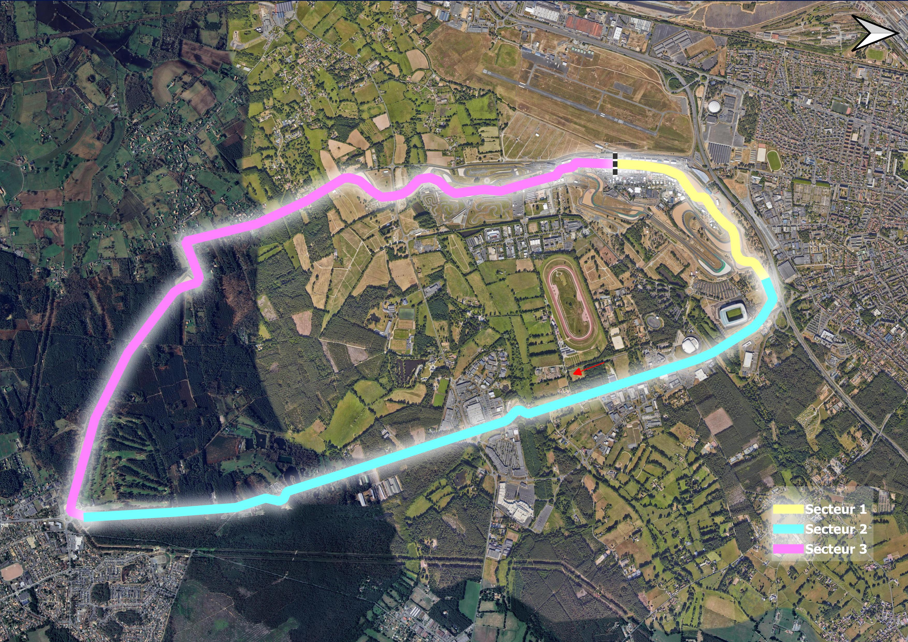
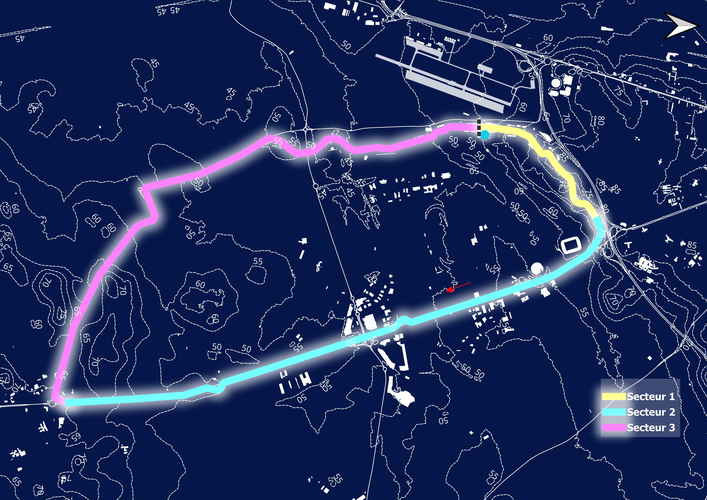
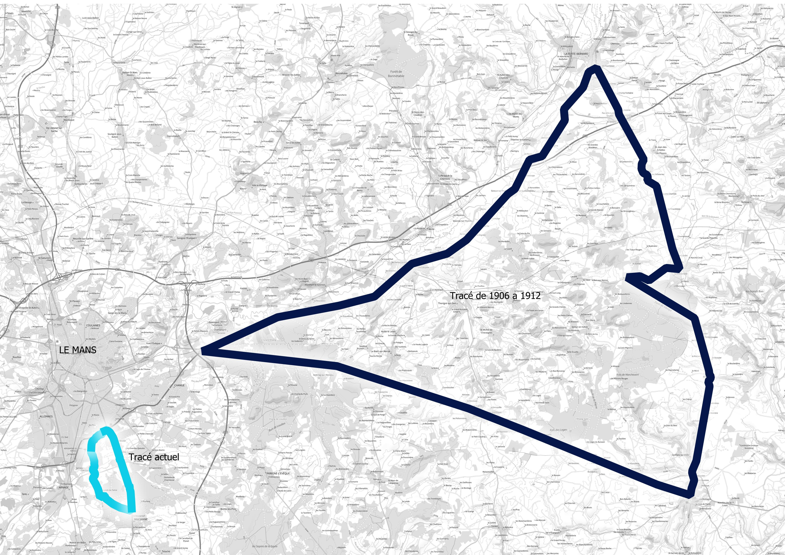

Identification
Pays : France
Ville : Le Mans
Longueur : 13.656 km
Première épreuve : 1906 GP de France - 1923 1er 24H du Mans
Record de Vitesse: 19
1988 Roger Dorchy sur WM P88 à moteur Peugeot: 405 KM/HRecord de Victoire Pilote : 1er Tom Kristensen (9) 2éme Jacky Ickx (6) 3éme ex Derek Bell, Emanuele Pirro,Franck Biela (5)
Record de Victoire Constructeur : 1 er Porsche (19) 2eme Audi (13) 3éme Ferrari (12)


Évolution des tracés
Tracé 1906

Sous l'impulsion de l'ACF (Automobile Club de France), est organisé le premier Grand Prix de France en 1906. Le circuit est composé de trois lignes droites formant un triangle. Il partait du village de Saint-Mars-la-Brière sur la D323 vers Le Mans, puis repiquait à gauche sur la D357 jusqu'à Saint-Calais, avant de remonter en direction de La Ferté-Bernard en contournant Vibraye, pour reprendre ensuite la D323, le tout sur une distance de 103 km. Le tracé fut repris pour la Coupe de la Sarthe par l'ACS, ancêtre de l'ACO actuelle, en 1911 et 1912, mais en sens inverse.
Tracé 1923

Tracé 1928
Tracé 1932
Tracé 1932
Tracé 1968
Tracé 1972
Tracé 1987
Tracé 1990
Tracé 2002
L’édition la plus marquante
Exemple : xxxxxx
Voiture emblématique
xxxx
xxxxx

Maquette échelle 1/xx.
Goodies et créations
xxxx

xxxxx